In this section we will implement training algorithm for single perceptron with sigmoid activation function.
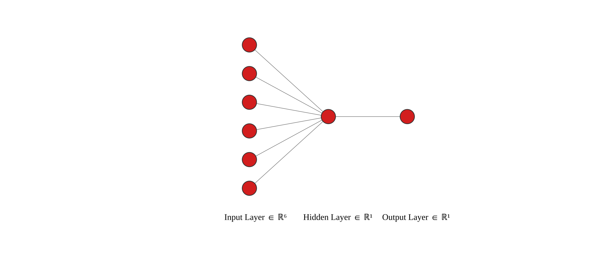
Let us start with defining our perceptron with sigmoid activation function.
Considered perceptron is a mapping from \(\hat{X} \in \mathbb{R}^M \to \hat{Y} \in \mathbb{R}\), We denote \(M\) as a number of features, i.e. size of the input to the perceptron.
We consider set of \(N\) tuples \((\hat{x}_i, \hat{y}_i)\) belonging to training data \(\hat{x}_i \in \hat{X}_{train}\) and \(\hat{y}_i \in \hat{Y}_{train}\)
Mathematical formulation of the perceptron is \(\hat{y}_i = \sigma(z_i)\), where \(z_i = \hat{x}_i W + B\). \(W\) are weights, \(B\) is bias, and activation function reads \(\sigma(z_i) = \frac{1}{1 + e^{-z_i}}\).
1.1 Sigmoid perceptron update
Training of a perceptron is done by an iterative update of weights \(W\) and bias \(B\) in order to minimize the loss function \(L\). As a loss function we consider mean-squared error:
Show that update rule for weights \(W\) and bias \(B\) is:
\[\begin{equation}
\begin{split}
W & \leftarrow W - \frac{\eta }{N}\sum_{i=1}^N (y_i - \hat{y}_i) y_i(1-y_i)x_i\\
B & \leftarrow B - \frac{\eta }{N}\sum_{i=1}^N (y_i - \hat{y}_i) y_i(1-y_i)
\end{split}
\end{equation}\]
2 Single layer Neural Network
Here, we will consider single layer Neural Network with sigmoid activation function.
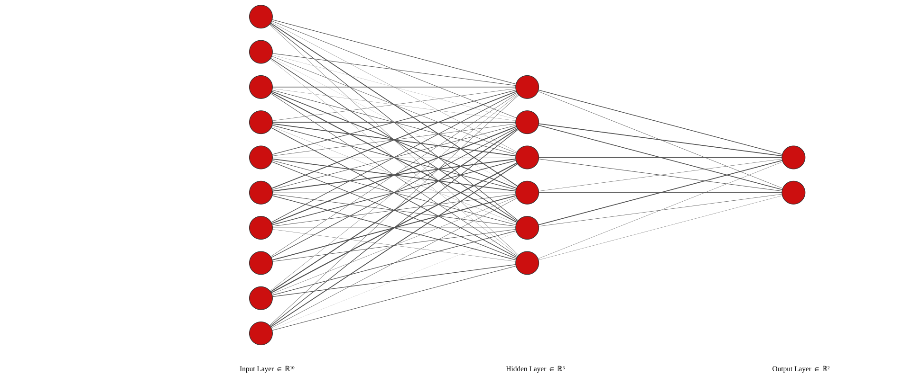
2.1 Single layer Neural Network definition
Let’s consider particular single layer Neural Network. The input of the network has \(M=10\) nodes, hidden layer has \(K = 6\) nodes, and the output layer has \(J = 2\) nodes. The first weigth matrix \(W_1\) has shape \([M,K]\), and the second weight matrix \(W_2\) has shape \([K ,J]\).
We have training data set \(\hat{X}\) containing \(N\) entries, i.e. training data is a matrix of shape \([N, M]\). The “labels” \(\hat{Y}\) are matrix of shape \([N,J]\).
2.1.1 Feed-forward pass
Now, let’s consider feed-forward pass of the training data \(\hat{X}\) through our Neural Network.
Show that update rules for weights \(W_1\) and \(W_2\) are
\(W_2 = W_2 - \frac{\eta}{N}H^TQ_2\)
\(B_1 = B_1 - \frac{\eta}{N}Q_1\)
\(W_1 = W_1 - \frac{\eta}{N}X^TQ_1\)
\(Q_2 = (Y-\hat{Y})Y(1-Y)\)
\(Q_1 = Q_2W_2^TH(1-H)\)
Hint 1: Operations in \((Y-\hat{Y})Y(1-Y)\) are element-wise multiplications.
Hint 2: Operations in \(H(1-H)\) are element-wise multiplications.
Hint 3: Resulting weights updates have to be the same dimension as the weight matrices.
2.2 Example task: handwritten digits with the MNIST dataset
Here, we will train our single layer Neural Network on a handwritten digits from MNIST dataset. MNIST stands for Modified National Institute of Standards and Technology. Architecture of our single layer Neural Network:
2023-01-02 18:23:53.267188: I tensorflow/core/platform/cpu_feature_guard.cc:193] This TensorFlow binary is optimized with oneAPI Deep Neural Network Library (oneDNN) to use the following CPU instructions in performance-critical operations: AVX2 AVX512F AVX512_VNNI FMA
To enable them in other operations, rebuild TensorFlow with the appropriate compiler flags.
2023-01-02 18:23:53.365798: I tensorflow/core/util/port.cc:104] oneDNN custom operations are on. You may see slightly different numerical results due to floating-point round-off errors from different computation orders. To turn them off, set the environment variable `TF_ENABLE_ONEDNN_OPTS=0`.
2023-01-02 18:23:53.726895: W tensorflow/compiler/xla/stream_executor/platform/default/dso_loader.cc:64] Could not load dynamic library 'libnvinfer.so.7'; dlerror: libnvinfer.so.7: cannot open shared object file: No such file or directory
2023-01-02 18:23:53.726930: W tensorflow/compiler/xla/stream_executor/platform/default/dso_loader.cc:64] Could not load dynamic library 'libnvinfer_plugin.so.7'; dlerror: libnvinfer_plugin.so.7: cannot open shared object file: No such file or directory
2023-01-02 18:23:53.726933: W tensorflow/compiler/tf2tensorrt/utils/py_utils.cc:38] TF-TRT Warning: Cannot dlopen some TensorRT libraries. If you would like to use Nvidia GPU with TensorRT, please make sure the missing libraries mentioned above are installed properly.
Let’s have a look at examples of the data
Code
k =10for i inrange(0,10): idx = np.where(y_train[:]==i)[0] # find indices of i-digit fig, ax = plt.subplots(1,k, sharey=True)for j inrange(0,k): ax[j].imshow(x_train[idx[j],:]) plt.show()
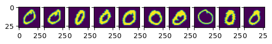
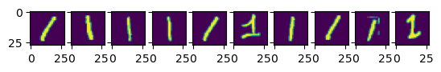
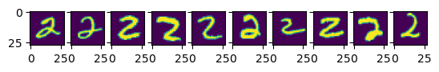
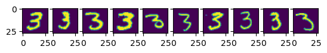
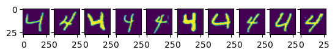
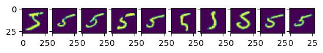
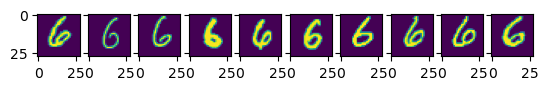
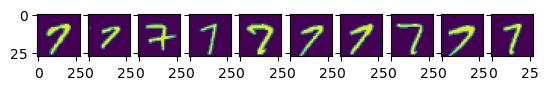
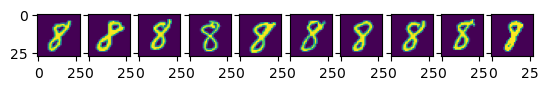
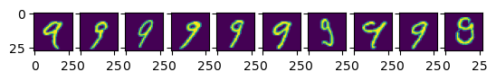
Before passing the data through the model, we have to first preprocess them:
Each picture we transform as \(\vec{x}_i \to \frac{\vec{x}_i - \text{mean}(\vec{x}_i)}{\text{std}(\vec{x})}\)
Because output node has simgoid activation function returning number in range \([0\dots1]\) we map each label \(y \in \{0,1,2,\dots,9\}\) to a number in range \([0,1]\) via \(y_i \to \frac{1}{10}y_i\). The reason is due to the fact, that we are using sigmoid activation function in the last output node, which gives number in range \([0,1]\).
def normalize_data(x):return (x - np.mean(x))/np.std(x)#Let us transform dataX_train = np.zeros((N_train_all, Nx*Ny))X_test = np.zeros((N_test_all, Nx*Ny))Y_train = np.zeros((N_train_all, 1))Y_test = np.zeros((N_test_all, 1))for i inrange(0,N_train_all): X_train[i,:] = x_train[i,:].reshape((Nx*Ny,)) # flatten images X_train[i,:] = normalize_data(X_train[i,:]) # normalize data to mean = 0, std = 1 Y_train[i] = y_train[i]/10.0# each digit maps to number [0,...,1]for i inrange(0,N_test_all): X_test[i,:] = x_test[i,:].reshape((Nx*Ny,)) # flatten images X_test[i,:] = normalize_data(X_test[i,:]) # normalize data to mean = 0, std = 1 Y_test[i] = y_test[i]/10.0# We choose small subset from training dataN_train =60000idx = np.random.randint(0, N_train_all, N_train)X_train = X_train[idx,:]Y_train = Y_train[idx] # We choose small subset from training dataN_test =10000idx = np.random.randint(0, N_test_all, N_test)X_test = X_test[idx,:]Y_test = Y_test[idx]
# NN parametersM = Nx*Ny # number of nodes in the input layerK =21# number of nodes in the hidden layerJ =1# number of nodes in the output layer # Training loop parameterseta =50# learning rateN_epoch =1000# training epochs
# Hint: Having given vector "a", we want to stack it n timesn =5stack_helper = np.ones((n))a = np.array([1,2,3,4])c = np.outer(stack_helper,a)print(c)
W_1_initial =1*(np.random.rand(M,K) -0.5) # initialize weights, uniform distribution [-1,1]W_2_initial =1*(np.random.rand(K,J) -0.5) # initialize weights, uniform distribution [-1,1]b_1_initial =1*(np.random.rand(K) -0.5) # initialize bias, uniform distribution [-1,1]W_1 = np.copy(W_1_initial)W_2 = np.copy(W_2_initial)b_1 = np.copy(b_1_initial)loss_train_vs_epoch = []loss_test_vs_epoch = []stack_helper_train = np.ones((X_train.shape[0])) # B_1 = np.outer(stack_helper_train, b_1) # matrix of biases with shape [N_train, K]for epoch inrange(0,N_epoch): # Training loop/Backpropagation#Feed-forward pass of the training data h = X_train@W_1 h = h + B_1 H = sigmoid(h) g = H@W_2 Y = sigmoid(g) loss_train =0.5*np.mean((Y - Y_train)**2) loss_train_vs_epoch.append(loss_train)#Helpers for calculating update Q_2 = (Y-Y_train)*Y*(1-Y) # element-wise multiplication Q_1 = Q_2@W_2.T*H*(1-H)# Update weights W_2 = W_2 - eta/N_train*H.T@Q_2 #W_2 update W_1 = W_1 - eta/N_train*X_train.T@Q_1 #W_1 update B_1 = B_1 - eta/N_train*Q_1#Feed-forward pass of the batch test data b_1 = B_1[0,:] # we need to extract only one row stack_helper_test = np.ones((X_test.shape[0])) B_1_test = np.outer(stack_helper_test,b_1) h = X_test@W_1 h = h + B_1_test H = sigmoid(h) g = H@W_2 Y = sigmoid(g) loss_test =0.5*np.mean((Y - Y_test)**2) loss_test_vs_epoch.append(loss_test)
Now, we can check how our trained Neural Network can predict labels from uknown test data. But first, we have to map our outputs of neural networks into digits, i.e. \(y^{\text{pred}}_i \to y^{\text{pred}}_i = \text{int}(10 y^{\text{pred}}_i)\).
b_1 = B_1[0,:]#Make prediction on training datastack_helper_train = np.ones((X_train.shape[0]))B_1_train = np.outer(stack_helper_train,b_1)h = X_train@W_1h = h + B_1_trainH = sigmoid(h)g = H@W_2Y_train_pred = sigmoid(g) #Make prediction on test datastack_helper_test = np.ones((X_test.shape[0]))B_1_test = np.outer(stack_helper_test,b_1)h = X_test@W_1h = h + B_1_testH = sigmoid(h)g = H@W_2Y_test_pred = sigmoid(g) Y_train_pred_round = np.around(Y_train_pred*10)Y_test_pred_round = np.around(Y_test_pred*10)Y_train_true = Y_train*10.Y_test_true = Y_test*10.confusion_matrix_train = np.zeros((11,11))for i inrange(0,N_train): confusion_matrix_train[int(Y_train_pred_round[i]), int(Y_train_true[i])] +=1confusion_matrix_test = np.zeros((11,11))for i inrange(0,N_test): confusion_matrix_test[int(Y_test_pred_round[i]), int(Y_test_true[i])] +=1accuracy_train = np.sum(np.diagonal(confusion_matrix_train))/np.sum(confusion_matrix_train)accuracy_test = np.sum(np.diagonal(confusion_matrix_test))/np.sum(confusion_matrix_test)
As we can see, the accuracy matrix has quite diagonal structure! With accuracy \(\sim 60\%\) we show that our super-simple architecture with one hidden layer and one output node can predict the handwritten digit \(6\) times better than random guess!
Let’s have a look at different predictions:
Code
k =5for i inrange(0,10): idx = np.where(Y_test_true[:]==i)[0] # find indices of i-digit fig, ax = plt.subplots(1,k, sharey=True)for j inrange(0,k): title_string =" \n P:"+"{:01d}".format(int(Y_test_pred_round[idx[j]][0])) ax[j].set_title(title_string) ax[j].imshow(X_test[idx[j],:].reshape(Nx,Ny)) plt.show()
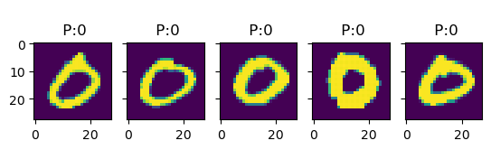
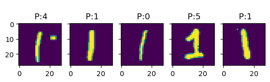
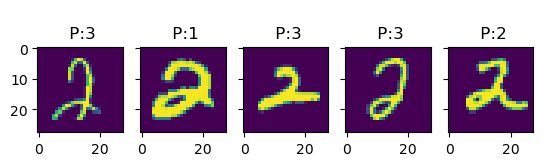
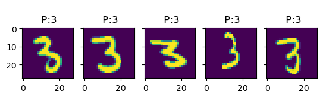
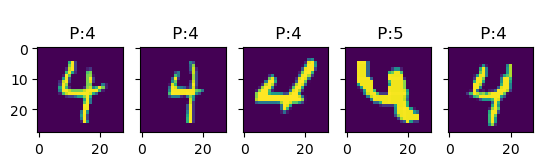
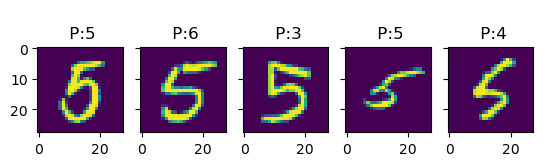
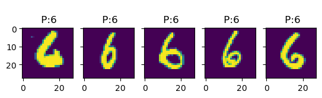
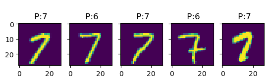
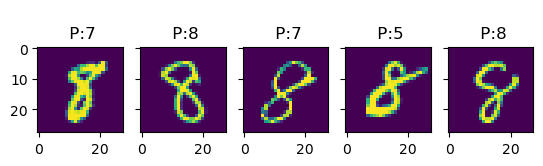
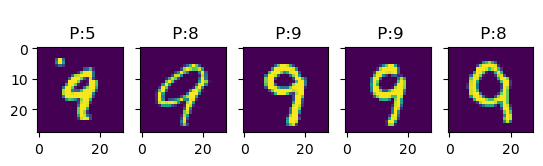
Exercise
Check training/test accuracy and confusion matrix for different numbers of training data samples.
Exercise
Set initial biases to zero, and freeze its training. Check the change in the confusion matrix and accuracy.
Exercise
Check prediction accuracy and confusion matrix for weights and bias initialization taken from: 1. Uniform distribution [-0.5,0.5] 2. Uniform distribution [0,1] 3. Normal distribution \({\cal N}(0,1)\)
Exercise
Implement function for adaptative learning rate \(\eta\) with the following rule: check relative change of the training loss after 10 epochs: if it is smaller than 5%, then \(\eta_{new} = \kappa\eta_{old}\), \(\kappa<1\).
2.3 Activation functions
So far we have been using softmax \(\sigma(z) = \frac{1}{1+e^{-x}}\) activation function only. The other activation functions are:
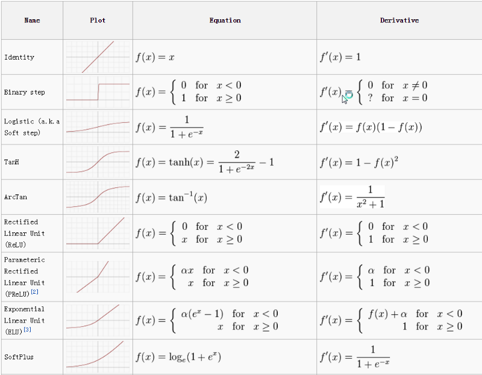
0_lo8wlkwReDcXkts0.png
Loss function should be calculated accordignly to the given activation function!
3 Optimization algorithms
There are many different optimization algorithms that can be used to train neural networks, and the choice of algorithm can have a significant impact on the performance of the model [1]
In general, optimization algorithms for training neural networks can be divided into two categories: first-order methods, which only use the gradient of the loss function with respect to the model’s parameters, and second-order methods, which also use the Hessian matrix of the loss function. Second-order methods can be more computationally expensive, but they may also be more effective in certain cases.
3.1 Stochastic gradient descent - SGD
In the standard gradient descent, we computes the gradient of the cost function with respect to the parameters for the entire training dataset. As such, batch gradient descent can be very slow and intractable for datasets that don’t fit in memory. Batch gradient descent also doesn’t allow us to update our model online, i.e. with new examples on-the-fly.
In SGD gradient descent, a mini-batch with \(m\) samples from the training dataset, and the model’s parameters are updated based on the average loss across the samples in each mini-batch. This is in contrast to batch gradient descent, where the model’s parameters are updated based on the average loss across the entire dataset.
By using mini-batches, mini-batch gradient descent is able to make faster progress through the training dataset compared to batch gradient descent, and it can also make use of vectorized operations, which can make the training process more efficient.
SGD performs a parameter update for each training example.
3.2 Momentum algorithm
Momentum optimization is an algorithm that can be used to improve the training of a neural network. It works by adding a fraction of the previous weight update to the current weight update, which helps the model to make faster progress in the right direction and avoid getting stuck in local minima. This fraction is called the momentum coefficient, and it is a hyperparameter that can be adjusted to achieve the best results for a given problem.
The momentum algorithm accumulates a history of the past gradients and continues to move in their direction. Momentum helps accelerate SGD by adding a fraction \(\gamma\):
\[\begin{equation}
\begin{split}
g_t &= \frac{\partial L(\theta_{t-1})}{\partial \theta}\\
v_t &= \gamma v_{t-1} - \eta g_t \\
\theta &= \theta + v_t,
\end{split}
\end{equation}\] where \(t\) enumerates training epoch, \(\theta\) are trainable parameters of the Neural Network, while \(\gamma\) and \(\eta\) are hyperparameters.
The velocity \(v\) accumulates the gradient of the loss function \(L\); the larger \(\gamma\) with respect to \(\eta\), the more previous gradients affect the current direction. In standard SGD algorithm, the size step of update was the gradient multiplied by the learning rate. Now, the size step depends on how large and how aligned sequence of gradients are.
The momentum algorithm can be understand as simulation of a particle subjected to Newtonian dynamics. The position of particle at time \(t\) is given by value of the trainable parameters \(\theta(t)\). The particle experiences the net force \[\begin{equation}
f(t) = \frac{\partial^2}{\partial t^2}\theta(t),
\end{equation}\] which can be expressed as a set of first time-derivatives: \[\begin{equation}
\begin{split}
v(t) = \frac{\partial}{\partial t}\theta(t) \\
f(t) = \frac{\partial}{\partial t}v(t)
\end{split}
\end{equation}\]
In the momentum optimization we have two forces: 1. One force is proportional to the negative gradient of the cost function \[\begin{equation}
f_1 = -\frac{\partial L(\theta)}{\partial \theta}.
\end{equation}\] This force pushes the particle downhill along the cost function surface.
Second force is proportional to \(-v(t)\). Physical intuition is that this force corresponds to viscous drag, as if the particle must push through a resistant medium.
In addition to speeding up training, momentum optimization can also help the model to generalize better to new data.
3.3 Adaptative Gradient - Adagrad
Adaptative Gradient algorithm [2] is based on the idea of adapting the learning rate to the parameters, performing larger updates for infrequent and smaller updates for frequent parameters.
The AdaGrad algorithm works by accumulating the squares of the gradients for each parameter, and then scaling the learning rate for each parameter by the inverse square root of this sum. This has the effect of reducing the learning rate for parameters that have been updated frequently, and increasing the learning rate for parameters that have been updated infrequently.
\[\begin{equation}
\begin{split}
\Delta \theta &= - \frac{\eta}{\sqrt{diag( \epsilon\mathbb{1} + G_t )}} \odot g_t,\\
g_t &= \frac{\partial L(\theta_{t-1})}{\partial \theta}\\
G_t &= \sum_{\tau = 1}^{t} g_\tau g_\tau^T.
\end{split}
\end{equation}\] where \(\odot\) means element-wise multiplication. The \(\epsilon \ll 0\) is a regularizing parameter, preventing from division by 0.
Adagrad eliminates the need to manually tune the learning rate, i.e. initially \(\eta \ll 1\), and it is effectively adapted during training process. Algorithm can be sensitive to the choice of the initial learning rate, and it may require careful tuning to achieve good results.
3.4 Adadelta: extension of the Adaptative Gradient
Adadelta algorithm [3] is based on the idea of adapting the learning rate to the parameters, similar to AdaGrad, but it does not require the specification of a learning rate as a hyperparameter. Adadelta uses an Exponentially Weighted Moving Average (EWMA) of the squared gradients to scale the learning rate. The Exponentially Weighted Moving Average (EWMA) for \(x_t\) is defined recursively as:
In general Adadelta algorithm uses EMWA for \(g_t^2\) instead \(G_t = \sum_{\tau = 1}^t g_\tau g_\tau^T\), as in Adagrad, i.e.:
\[\begin{equation}
E[g^2]_t = \gamma E[g^2]_{t-1} + (1-\gamma)g_t^2,
\end{equation}\] and we update parameters as \[\begin{equation}
\begin{split}
\theta_{t+1} & = \theta_t + \Delta\theta_t \\
\Delta\theta_t & = - \frac{\eta}{\sqrt{E[g^2]_t + \epsilon}}\odot g_t.
\end{split}
\end{equation}\] Let’s introduce notation \(RMS[g]_t = \sqrt{E[g^2]_t + \epsilon}\), where \(RMS\) stands for root-mean-square.
However, Matthew D. Zeiler, the Author of Adadelta noticed that the parameter updates \(\Delta\theta\) being applied to \(\theta\) shoud have matching units. Considering, that the parameter had some hypothetical units \([\theta]\), the changes to the parameter should be changes in those units as well, i.e. \[\begin{equation}
[\theta] = [\Delta\theta].
\end{equation}\] However, assuming the loss function is unitless, we have \[\begin{equation}
[\Delta\theta] = \frac{1}{[\theta]},
\end{equation}\] thus units do not match. This is the case for SGD, Momentum, or Adagrad algorithms.
The second order methods such as Newton’s method that use the second derivative information preserve units for the parameter updates. For function \(f(x)\), we have \[\begin{equation}
\Delta x = \frac{\frac{\partial f}{\partial x}}{\frac{\partial^2 f}{\partial x^2}},
\end{equation}\] thus units \([\Delta x] = [x]\) are preserved. Keeping this in mind, the update rule in Adadelta algorithm is defined as: \[\begin{equation}
\begin{split}
\theta_{t+1} & = \theta_t + \Delta_t\theta_t \\
\Delta\theta_t &= -\frac{RMS[\Delta\theta]_{t-1}}{RMS[g]_t}\odot g_t.
\end{split}
\end{equation}\]
This has the effect of automatically adapting the learning rate to the characteristics of the problem, which can make it easier to use than other optimization algorithms that require manual tuning of the learning rate.
3.5 Adaptive Moment Estimation - Adam
Adam algorithm [4] combines the ideas of momentum optimization and Adagrad to make more stable updates and achieve faster convergence.
Like momentum optimization, Adam uses an exponentially decaying average of the previous gradients to determine the direction of the update. This helps the model to make faster progress in the right direction and avoid oscillations. Like AdaGrad, Adam also scales the learning rate for each parameter based on the inverse square root of an exponentially decaying average of the squared gradients. This has the effect of reducing the learning rate for parameters that have been updated frequently, and increasing the learning rate for parameters that have been updated infrequently.
Adam uses Exponentially Modified Moving Average for gradients and its square:
\[\begin{equation}
\Delta \theta_{t+1} = \theta_t - \frac{\eta}{\sqrt{\hat{v}_t} + \epsilon}\hat{m}_t,
\end{equation}\] where \[\begin{equation}
\begin{split}
\hat{m}_t &= \frac{m_t}{1-\beta_1}\\
\hat{v}_t &= \frac{v_t}{1-\beta_2},
\end{split}
\end{equation}\] are bias-corrected first and second gradient moments estimates.
Authors suggest to set \(\beta_1 = 0.9\), \(\beta_2 = 0.999\), \(\eta = 10^{-8}\).
Exercise
Implement mini-batch SGD algorithm. In the training loop feed-forward training data with fixed size batches and update gradients after each batch. Steps:
Fix batch size \(n_b\)
Calculate number of batches \(N_b = N_{train}/n_b\)
Loop over training epochs:
3.1. Loop over number of batches:
3.1.1 at each iteration randomly choose batch size training points from training data set
3.1.2 feed-forward through network
3.1.3 backpropagate and update weights
3.2 Calculate loss on test dataset, and on a single batch from the training dataset
4 References
[1] Goodfellow, I., Bengio, Y., Courville, A. “Deep Learning”, MIT Press (2016), https://www.deeplearningbook.org/
[2] Duchi, J., Hazan, E., & Singer, Y. (2011). Adaptive Subgradient Methods for Online Learning and Stochastic Optimization. Journal of Machine Learning Research, 12, 2121–2159 \
[3] Zeiler, M. D. (2012). ADADELTA: An Adaptive Learning Rate Method. Retrieved from http://arxiv.org/abs/1212.5701
[4] Kingma, D. P., & Ba, J. L. (2015). Adam: a Method for Stochastic Optimization. International Conference on Learning Representations, 1–13. https://arxiv.org/abs/1412.6980